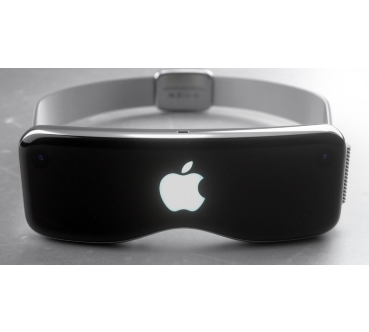
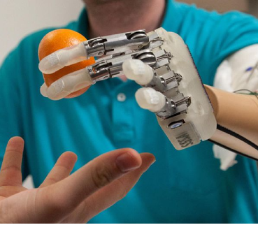

UAT is proud to present to you a new
a new curriculm, with the purpose of
aiming for the stars.
With the influx of new space tourism
we will personally coach you, with
skills to make sure you carve your lane
in this new field
2625 W. Baseline Road
Tempe, AZ 85283-1056
Main Telephone: 602-383-8228
Out of State: 877-UAT-GEEK (877-828-4335)
Fax: 602-383-8222
UAT offices are open Monday through Thursday
from 8 a.m. to 6 p.m.(MST),
and Fridays from 8 a.m. to 5 p.m. (MST).
4D VR testing at UAT
New weather simulating headsets have arrived at UAT,
Able to fully immerse you in rain, snow, heat or wind.

Bio-Robotics
New works in the effort of Bio robotics.
As presented by Mr "yadda yadda". at UAT's
esteemed robotics program you too can test the last in
bio robotics.
